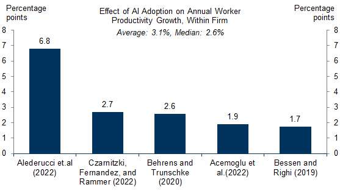
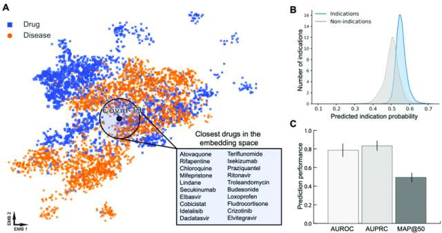

Возможности искусственного интеллекта
Искусственный интеллект уже меняет правила игры в трёх ключевых сферах — экономике, медицине и творчестве. Рассмотрим подробнее, какие перспективы открываются в каждой из этих областей.
Экономика: новый двигатель глобального роста
Согласно отчёту McKinsey Global Institute, ИИ способен повысить производительность труда на 33%, что в условиях сокращения трудоспособного населения становится не просто возможностью, а экономической необходимостью. Goldman Sachs прогнозирует, что повсеместное внедрение ИИ может добавить 20 трлн долларов к экономике США, причём около 8 трлн из этой суммы достанется компаниям в виде капитального дохода.

Все исследователи подтверждают, что внедрение ИИ становится экономическим двигателем — средний рост 2-3% процента в год. Картинка с Goldman Sachs.
При этом, по оценкам аналитиков, текущий уровень инвестиций в ИИ составляет менее 1% ВВП США — по сравнению с 2–5% в эпоху электрификации или интернет-бума. Это значит, что экономический потенциал ИИ раскрыт далеко не полностью, и нас ждёт масштабная трансформация бизнес-процессов в ближайшее десятилетие.
Медицина: диагностика, лекарства и персонализация
В здравоохранении ИИ демонстрирует впечатляющие результаты. Технологии глубокого обучения, интегрированные с сетевым подходом к пониманию болезней (network medicine), позволяют учёным анализировать многомерные биомедицинские данные с высокой скоростью и точностью, помогая выявлять механизмы сложных заболеваний и разрабатывать персонализированные методы лечения.

Один из ярких примеров — исследователи из Penn Medicine, которые при помощи ИИ проанализировали 4000 уже существующих лекарств и нашли одно, спасшее жизнь пациенту с редким идиопатическим мультицентрическим синдромом Каслмана. Такие успехи в перепрофилировании препаратов (drug repurposing) открывают новые горизонты в лечении редких болезней, для которых ранее не существовало эффективных средств.
ИИ становится мощным катализатором изменений в экономике, медицине и творчестве. В бизнесе он обещает колоссальный прирост производительности, в здравоохранении — спасение жизней через ускорение диагностики и поиска лекарств, в искусстве — появление новых форм сотворчества человека и машины. Важно, что во всех этих сферах ключевой остаётся роль человека: ИИ выступает не заменой, а инструментом, который усиливает наши способности и открывает новые горизонты.